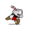

-
HistoriaDurante una entrevista, Chad Moldenhauer cofundador del Studio MDHR explicó cómo se vieron realmente sorprendidos por la positiva reacción que obtuvieron de la entrega.
El desarrollo de 'Cuphead' se inició en 2010, momento en que tan solo trabajaban tres personas. Para cuando lo presentaron en 2015 tan solo disponían de un par de armas y algunos jefes, sin embargo la gran reacción positiva por parte de los jugadores, en parte gracias a su gran apartado estético, provocó que le dieran un repaso a todo el proyecto.. -
Reseña
Cada detalle de Cuphead, hermoso en estilo visual y pulido en cuanto a mecánicas, es un testamento del amor de sus creadores por el perfeccionismo. Basta ver cómo el compromiso de Jake Clark en sincronía con los hermanos Chad y Jared Moldenhauer —de Studio MDHR— no se limitó al tributo de las caricaturas clásicas de los 30s, sino que presenta un sofisticado homenaje a lo mejor del platforming en los videojuegos y, a la vez, alimenta de forma magistral las exigencias de quienes buscan un desafío genuino.
La espera fue demasiado larga para quienes lo conocimos desde el inicio, cuando fue anunciado en el verano del 2014, pero valió la pena. Cuphead es un banquete visual, auditivo y de gameplay, esperando causar una euforia de sabor hasta en los paladares más exquisitos. Obviamente dicha sensación no es equitativa para todos; hay quienes seguro experimentarán algo de amargura y frustración desde los primeros minutos, por causa de una curva de aprendizaje que demanda más habilidad con el control de lo que se acostumbra hoy día. Pero dejando atrás esa aparente falta de accesibilidad, Cuphead es evidencia de lo que se puede lograr cuando el factor monetario no tiene decisión en el trabajo artístico de un desarrollador. -
Vídeos
-
Estudio
Lienzo es un estudio de desarrollo de videojuegos ubicado en Chihuahua, México. Creamos experiencias que están a la par del estándar de calidad de esta industria creativa internacional. En corto, nuestra meta es hacer juegos geniales. ¡Hacemos videojuegos para los jugadores! -
Juego
Lanzamiento: Inicios de 2018
Plataformas: Nintendo Switch, Xbox One, PlayStation 4 & PC
Mulaka: Pueblos Originarios es un juego de aventura en 3D basado en las historias, mitos y leyendas del pueblo indígena Tarahumara (o Rarámuri).
En Mulaka tomarás control de nuestro protagonista, un Sukurúame, y lo ayudarás en su misión para ganarse el favor de los semidioses y prevenir la cuarta destrucción del mundo.
- ¡Experimenta las hermosas ubicaciones del paisaje Tarahumara!
- ¡Combate gigantescos enemigos a lo largo de tu aventura!
- ¡Recolecta hierbas y utilízalas como pociones!
- ¡Domina la lanza de Mulaka en combate!
- ¡Usa las habilidades maratónicas de los Rarámuri!
-
Vídeos
-
Historia
La historia empieza con Rusty, un robot que ha heredado una mina de su difunto tío Joe, y a pesar de su inexperiencia, pronto descubrirá que “nació” para explorar el subsuelo. Como no podía ser de otra manera, nuestro protagonista ayudará a que Tumbleton, un pueblo con una clara estética mezcla de western y steampunk, recupere su antiguo esplendor.
Para ser sinceros, la historia es una simple excusa para adentrarnos en las profundidades de la tierra, un paraje oscuro y lleno de peligros que en su interior alberga un secreto inesperado. -
Analisis
Aventuras bajo tierra
La trama que da lugar a SteamWorld Dig 2 es bastante convencional y dista bastante de ser uno de sus aspectos más conseguidos ni llamativos. Rusty, el protagonista robótico de la primera entrega, anda desaparecido, y nos toca guiar a la nueva protagonista, la joven Dorothy, por un mapeado bastante extenso para dar con su paradero. Una mera excusa para que nos sumerjamos en una obra que, por su desarrollo, recuerda bastante a lo vivido ya no sólo en la entrega original, sino en muchas de las aventuras de este mismo estilo que aparecieron en la era de los 16 bits. Al comienzo del juego Dorothy apenas posee un par de movimientos y sólo es capaz de saltar, usar su pico para cavar en las profundidades de las minas y otros escenarios de los que más tarde os hablaremos y poco más. Pero como sucede con este tipo de producciones de estilo Metroidvania como es el caso de la obra que nos ocupa, a medida que progresamos todo va cambiando. -
Vídeos